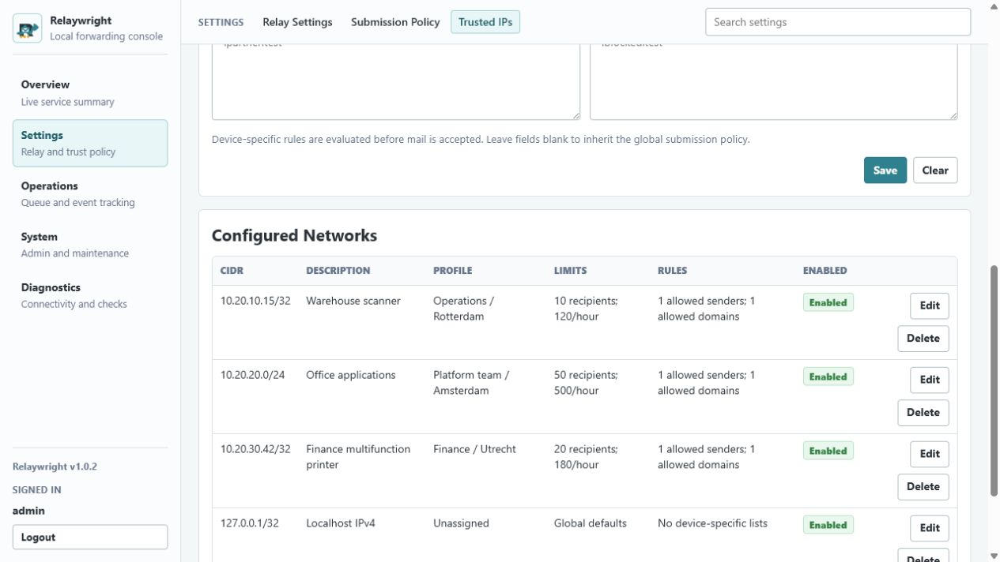
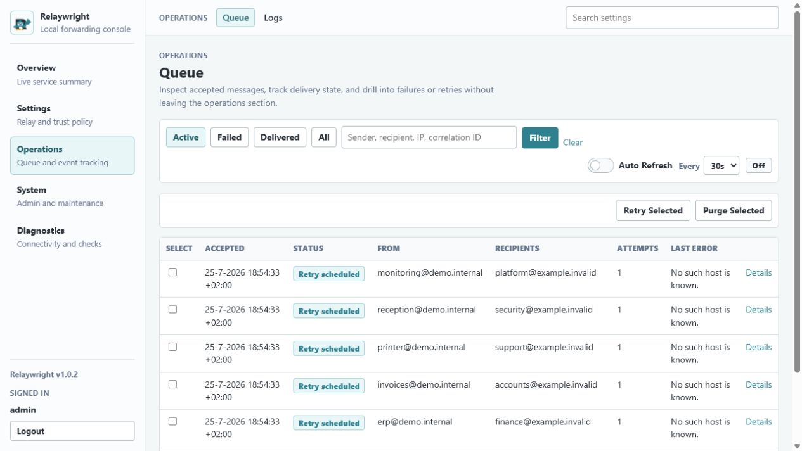
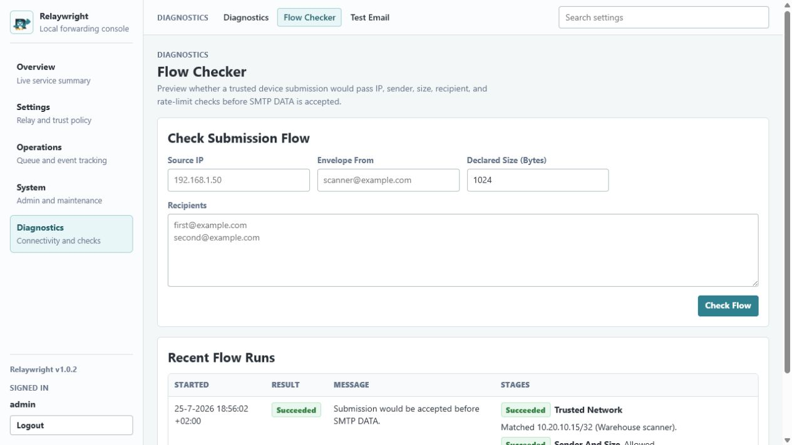
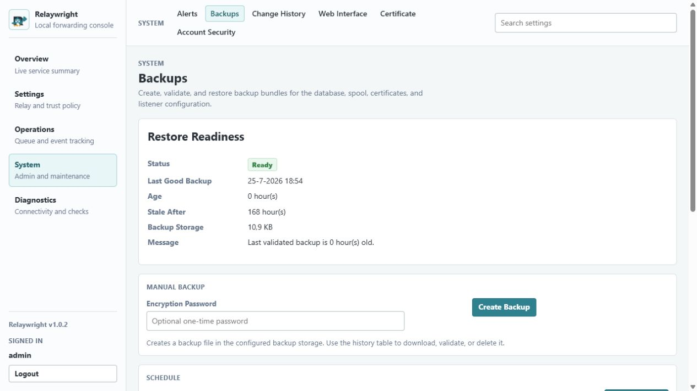

Trusted device intake
Allow SMTP submission by IP or CIDR, with owner, location, sender, recipient, size, and rate policy summaries.
Free self-hosted SMTP relay gateway
Run a narrow, auditable relay for printers, scanners, line-of-business apps, and internal systems that need to send mail through one controlled upstream smart host.

Operational control
Relaywright focuses on the quiet work system engineers need from an internal SMTP relay: accept only what should be accepted, keep accepted messages durable, and make delivery state visible.
Allow SMTP submission by IP or CIDR, with owner, location, sender, recipient, size, and rate policy summaries.
Accepted DATA is written to disk before SMTP success. Operators can inspect age, attempts, retry schedule, and failure category.
Relay to one upstream smart host with TLS settings, optional basic authentication, or Microsoft OAuth client credentials.
Run connectivity checks, submission-flow previews, and test email diagnostics before pointing devices at the relay.
Create SQLite backups, validate restore readiness, review retention, and stage restores with clear restart impact.
Review admin sign-in events, current session details, suspicious login warnings, HTTPS certificate status, and account recovery guidance.
First 15 minutes
Use the admin UI to finish configuration before any production device starts sending through Relaywright.
Use the Windows installer or Linux install script for v1.0.2.
Open the local admin URL and complete first-run setup.
Set the smart host, TLS behavior, timeout, and authentication mode.
Allow only the source IPs or CIDRs that should submit mail.
Check connectivity, preview submission policy, and send a test email.
Point one device at the relay, confirm queue and delivery history, then expand.
Admin console




Security model
SMTP submission is constrained by trusted IP or CIDR rules before message content is accepted.
Accepted DATA is durably spooled and queue metadata is saved before clients receive SMTP success.
Production installs are HTTPS-first, with admin HTTP disabled unless deliberately enabled.
Relay secrets are protected at rest, and diagnostics avoid storing message bodies, passwords, tokens, or private SMTP transcripts.
Validated release line
Release builds are self-contained. The target machine does not need a separate .NET runtime.
Install
Use the release artifacts and verify them with SHA256SUMS.txt before installing on production hosts. The latest release page always points at the current stable build.
Download the Windows x64 installer and run it as Administrator. The zip package is available for manual inspection or advanced recovery.
The installer selects x64, ARM64, or ARMv7 packages automatically.
curl -fsSL https://github.com/dotwebster-development/Relaywright/releases/download/v1.0.2/install-relaywright.sh \
-o install-relaywright.sh
sudo bash install-relaywright.sh --repo dotwebster-development/Relaywright --version 1.0.2To track the current stable version after reviewing release notes, use --repo dotwebster-development/Relaywright --version latest.
References